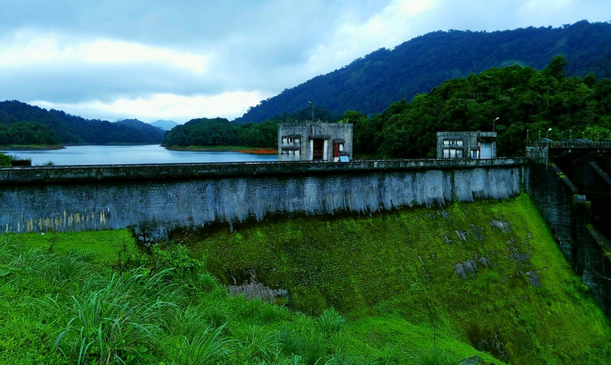

Srikanteshwara Temple:

Take a break from daily life and pay a visit to the Srikanteshwara Temple in Kozhikode. On your visit to Kerala, you must add this temple to your list of places to see in Kozhikode. More than a hundred years old, this temple is dedicated to Lord Shiva and is a must-visit pilgrimage of Hindus. Apart from Lord Shiva, you can worship Lord Ganapathy, the serpent Gods, and Lord Krishna. There is a much widely circulated folklore regarding the temple and its construction by the Maharaja of Travancore. Moreover, the Shivaratri festival is celebrated in much gaiety and fervor here. Apart from that, the moment you arrive in the temple, you will be engulfed by its tranquil atmosphere and both devotees and visitors are welcome inside it. Further, take time to explore the beautiful architecture and some quiet moments near the pond. Location: Ward No 5, EMS Stadium Building, SK Temple Rd, Near, Thazhekode, Kozhikode, Kerala 673001. Price: No Entry Fee. Timing: 5:00A:M: to 12:15 P:M: and from 5:00 pm to 8:00 pm. Best Time to Visit: December to April
Kakkayam Dam:
Kakkayam Dam is a famous picnic spot around Kozhikode because of its scenic beauty and plenty of choices for outdoor activities. Though the dam is small in size, it more than compensates with the small waterfalls around it. Take a peek at the varieties of animals and birds that inhabit the place. Or take a boat ride along the dam and see the small waterfalls and dense forests that surround the dam. Move around and soak in the scenic beauty of the hills around the dam. There is a hanging bridge on the waterfall which is another tourist attraction. Spare a day from your tour itinerary and visit this beautiful spot with your loved ones. Pamper the adventurer in you by going on a trek around the dam. This will always be a memorable visit. Location: Located at Koorachundu in Kozhikode. Entry Fee: Rs.20 per person. Timing: 8:00AM to 4:00PM. Best Time to Visit: August to November.